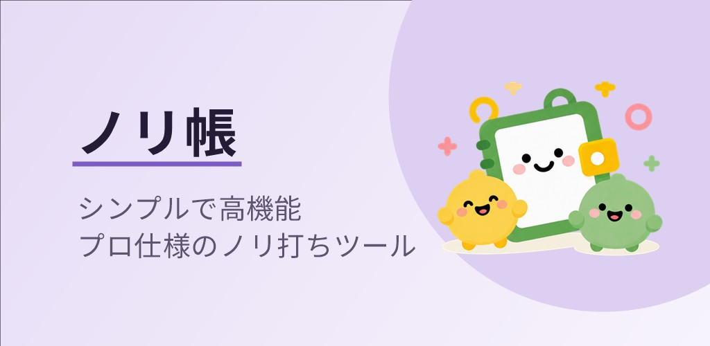
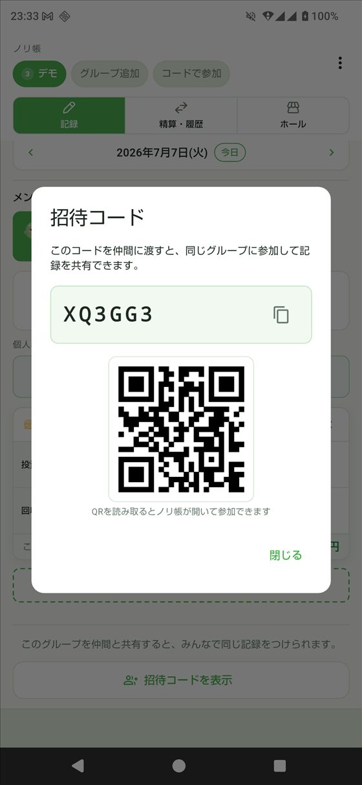
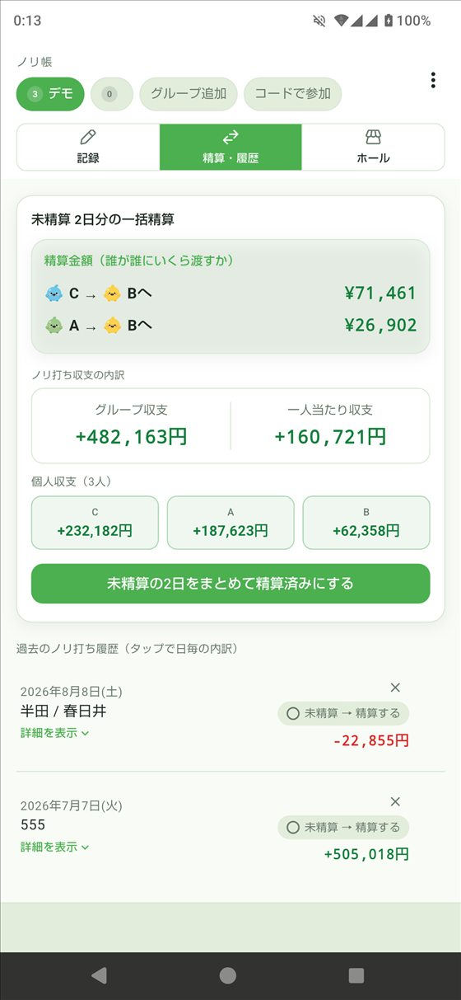
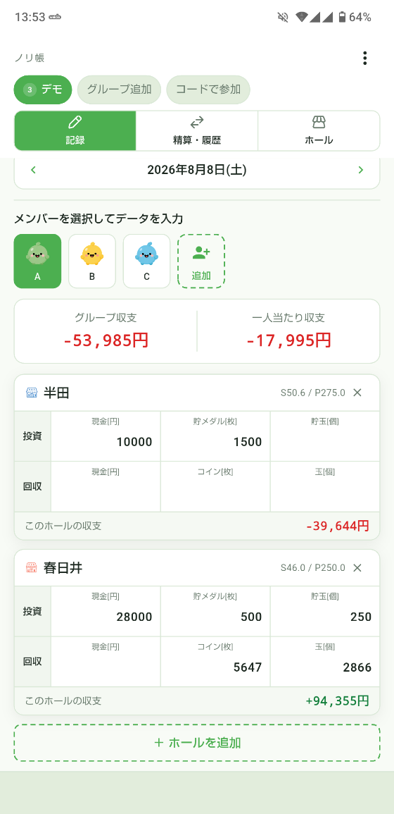

招待コードかQRで参加すれば、あとは全員が同じ記録を見るだけ。誰かが入力した投資・回収が、その場でみんなの画面に反映されます。今のチームの状況を打ちながら把握できます。

その日で精算しなくてもOK。過去の分も含めて通算で自動集計するので、繰り越して、好きなときにまとめて精算できます。

ホールごとの投資・回収をその場でサッと記録。何軒ハシゴしても、スロットもパチンコも、現金・貯メダル・貯玉を交換率で自動換算して、その日のトータルの勝ち負けにまとめます。

精算
通算収支を均して、最小の受け渡し回数で自動算出。
——ここはもう、あって当然です。
スペック